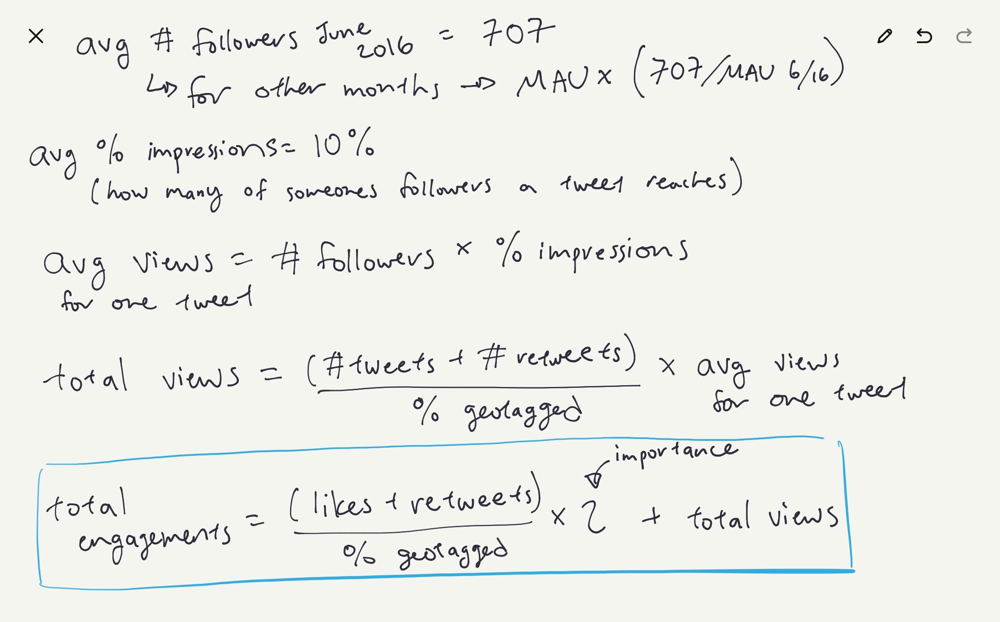

Hypothesis and Metrics for Success
We are seeking to find out if there is a positive correlation between overall
Twitter engagement on the topic of climate and people’s practice of environmentally conscious behavior.
To answer this, we have the following hypotheses:
- Null hypothesis: There is no significant linear relationship between Twitter engagement
on climate topics and recycling behavior.
- Alternate hypothesis: There is a significant linear relationship between Twitter
engagement on climate topics and recycling behavior.
Our main metric of success is finding statistically significant p-values for our Pearson correlation coefficients.
Restructuring our Data
To better analyze our data, we had to come up with a way to estimate Twitter engagement
from the raw data we had collected, our raw data being the number of tweets mentioning
the word ‘climate,’ the likes that those tweets got, and the number of retweets mentioning
climate, by month in each of our locations. We used this data to calculate engagement in the following way:

Explanation of these calculations:
- The average number of followers for June 2016 was found
here.
Along with the number of monthly active users found from Twitter investors
reports (reports found
here),
this was used to estimate the average number
of followers for the other months.
- Impressions are Twitter’s metric of how many people a tweet has been seen
by. From looking around online, the percentage of an account’s followers who
typically view a tweet from that account ranges from around 5% to 20%.
We estimated this to be 10% for our calculations.
- We then calculated the average number of views per tweet using the
average number of followers and percentage of impressions.
- Total views was found using the number of tweets and retweets and the
average number of views per tweet. We also divided the number of tweets
and retweets we queried by the percentage of tweets that were geotagged
that month (data found
here)
because we only collected geotagged tweets.
This way, we normalized for differences in how many tweets were geotagged
each month and scaled our numbers up to represent the total number tweets
mentioning climate that month.
- Finally, we defined an engagement as a like, retweet, or a view, so we
summed all these values. We decided to weight the likes and retweets with
an extra importance because a like or retweet is a greater indicator of
engagement with the topic than just a view.
The dependent variable we used was recycling diversion rate, which is an aggregate
of the recycling data we collected from the city websites of Buffalo, Providence, and Seattle.
Statistical Tests
Link to analysis script (python)
Link to data (csvs)
For our statistical test, we decided to calculate the Pearson correlation coefficient
because this is a measure of linear correlation between two variables. It always has a
value between +1 and -1, where a positive value shows positive correlation and a negative
value shows negative correlation. This test made the most sense for our hypothesis because
we are looking specifically at whether there is a linear relationship between twitter engagement
on climate and recycling behavior.
In order to measure success or failure, we calculated a p-value from our correlation coefficient.
Both the Pearson coefficient and p-value were calculated using the scipy.stats library in Python.
Once we calculated our p-value we could decide whether to accept or reject the null hypothesis
by comparing it to our significance level of 0.05. A p-value less than this significance
level would allow us to reject the null hypothesis, and show that there is a linear
relationship between engagement and recycling, which we would define as a success.
We decided to focus on the relationship between engagement and recycling behaviour
because this most closely represented the relationship we want to analyze in our
hypothesis and it uses all our raw data in a holistic way. However, in addition
to plotting and running tests on total twitter engagement vs. recycling diversion
rate for all three cities aggregated, we broke our data down to run additional
tests and see the relationship between different parts of our data. First, we
broke down the components of twitter engagement: number of tweets, number of
likes, and number of retweets. We plotted each of these metrics against total
diversion rates and calculated the pearson coefficients. Second, we broke down
both our tweet data and recycling data by city: Providence, Buffalo, and Seattle.
For each stand alone city, we plotted the three types of engagement against
the city’s recycling diversion rate. In total, we ended up making 12 additional
plots and therefore running 12 additional tests. The results are shown below:
Correlation Coefficients and P-Values:
| Relationship |
Pearson coefficient |
P-value |
|---|
| Engagement vs diversion |
0.23 |
0.04 |
| Tweets vs diversion |
0.12 |
0.28 |
| Tweets Buffalo vs diversion |
0.38 |
0.00 |
| Tweets Providence vs diversion |
0.07 |
0.54 |
| Tweets Seattle vs diversion |
0.05 |
0.64 |
| Likes vs diversion |
0.29 |
0.01 |
| Likes Buffalo vs diversion |
0.39 |
0.00 |
| Likes Providence vs diversion |
0.22 |
0.06 |
| Likes Seattle vs diversion |
0.06 |
0.62 |
| Retweets vs diversion |
0.27 |
0.02 |
| Retweets Buffalo vs diversion |
0.42 |
0.00 |
| Retweets Providence vs diversion |
0.11 |
0.36 |
| Retweets Seattle vs diversion |
0.18 |
0.14 |
One challenge we faced when evaluating the model was that there were a few outliers in the number of likes and retweets. These data points had likes and retweet values much larger than the other data points and skewed our plots, so we decided to remove them to try and fit our model more accurately. To do this we cut off the data at the 0.95-quantile for likes and retweets. As we continue to work on refining our analysis, I think we should revisit how we are handling outliers and try and figure out why these outliers exist.
Another issue that we should consider in the future is the possibility of there being confounding variables. In particular, we know that over the past few years general awareness around the effects of climate change and understanding of climate science has been increasing. It is possible that the number of tweets about climate are greater because there is more general awareness, and recycling rates have increased because people are becoming more environmentally conscious.
Interpretation of Results
Null hypothesis: There is no significant linear relationship between Twitter engagement
on climate topics and recycling behavior.
Alternate hypothesis: There is a significant linear relationship between Twitter
engagement on climate topics and recycling behavior.
Although some statistic-city pairs did not show a significant correlation between
engagement and diversion rate, our overall engagement statistic, which aggregated
the data across all cities and computed a weighted average of all the Twitter
statistics, normalized by overall Twitter usage and geotagging rates over time,
was significantly correlated with recycling diversion rate with a
p-value of 0.04.
Our
significance level was 0.05, so with this p-value we reject the null hypothesis
and conclude that there is evidence to show that there is a significant linear
relationship between Twitter engagement on climate topics and recycling behavior.
In the additional 12 tests we ran between Twitter metrics and diversion rate, only 5 were significant. This lack of consistency in significance could be a product of irregularities between city cultures. Nevertheless, we saw a positive correlation in all samples, and seeing as our overall statistic was significant, we are inclined to reject the null hypothesis in favor of the alternate hypothesis.
Visualizations
Our primary visualization will be our scatter plot of total Twitter engagement vs. recycling diversion rates for the three cities aggregated together. We believe this is our most important visualization as it encompassses our hypothesis most holistically and includes all of our data. We may also want to display some of our plots between more specific parts of our data to show variations between cities and the different twitter metrics. These are shown below:
One challenge in both visualizing and analyzing our results was that our method for calculating Twitter engagement from the raw data made assumptions that the data inputted was a representation of the whole country (in using MAU, % geotagged, ave # followers stats for all of the U.S.). Because of this, we thought it would be a stretch to try to calculate engagement for specific cities, meaning we couldn’t get total twitter engagement graphs broken down by cities. We hope, however, that the specific-city graphs we do have together tell most of the story.
Our final visualization will likely need to include a brief caption explaining the context of how we calculated Twitter engagement and what cities are represented in our results. We will also potentially include our calculated p-values and statistical significance in our visualizations, so we will want to include our methodology for getting these values in the caption as well.